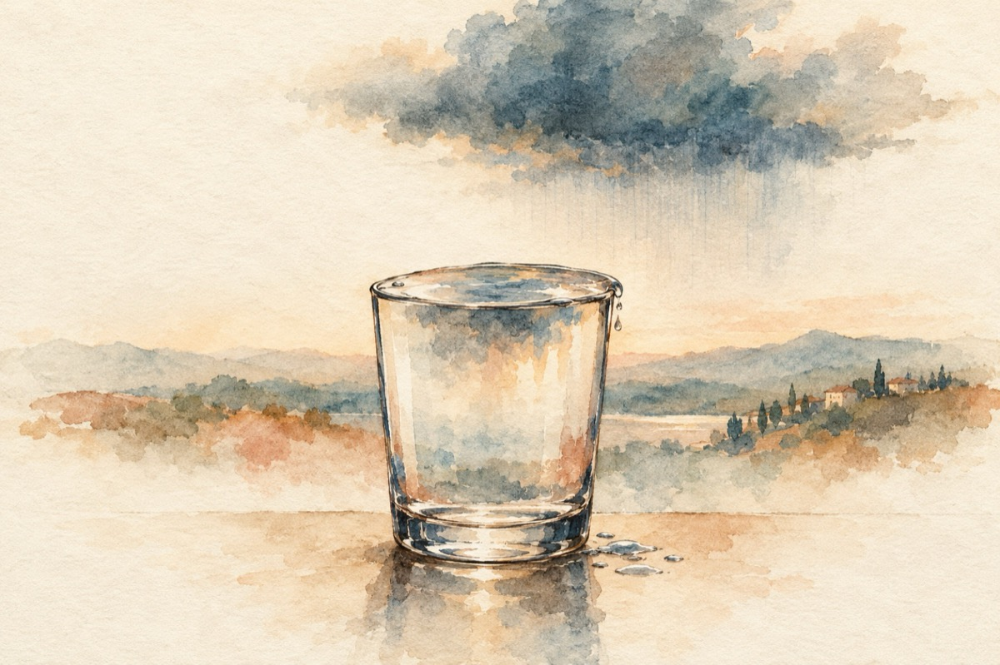

Se-ntâmplă
Se-ntâmplă adeseori
Ca răzvrătit în tine sau urmărit de soartă
Cuprins și de tristețe, lipsit și de candori
Sătul de suspiciuni și săturat de ceartă
Să-ți vină-a nu mai fi și să dispari prin nori!
La tot ce-a fost n-ai așteptat răsplata
Îndeplinindu-ți sfânta datorie
Și că în viață adesea se mai iartă
Tu oferind atât cât ai putut
Ne-nvinuind pe nimeni cumva de vreo simbrie
Rămâi învinuit că răul l-ai făcut
Când dorul te apasă cum lespedea de piatră
Și de iubirea sfântă nicicum tu nu ai parte
Și obligat să bați din poartă-n poartă
Dorit de poți a fi cât mai departe
Iar lacrima din tine a devenit secată,
Atunci nevrând, cu cerul slobozit pe tine
Și cu pământu-i care te pândește
Ce tu dorești nimic nu îți mai vine
Se năruie în tine și totul se sfârșește
Atunci se-ntâmplă ce poate să se-ntâmple
Ce taurul pățește cu sulița-n coridă
Paharul suferințelor cu totul să se umple
Pământul să-nțeleagă, și-adânc să se deschidă!
Vasile Groza